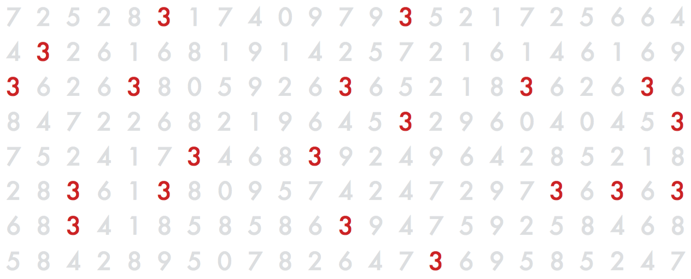

class: center, middle # There are <span class="highlight">10 kinds</span> of people in this world. # <span class="highlight">Those that understand</span> binary and <span class="highlight">those that don’t</span>. --- class: center, middle # Datasta visuaaliseksi <span class="highlight">journalismiksi</span></a> <img src="img/yle_logo.png" style="width: 150px;" /> Teemo Tebest, <span class="highlight">@teelmo</span> --- class: left, middle # Teemo Tebest, Yle * <span class="highlight">Datajournalisti</span>, toimittaja, diplomi-insinööri * Tausta web-kehittäjänä ja tiedon visualisoinnissa * Ylen datatiimin perustajajäsen vuodesta 2013 ```javascript require('JS, HTML5, PHP, Python, full-stack, MongoDB, GIS, network analysis'); ``` * Twitter: <a href="http://twitter.com/teelmo"><span class="highlight">@teelmo</span></a> * Kotisivu: <a href="teelmo.info"><span class="highlight">teelmo.info</span></a> --- class: full, middle <img src="img/plusdesk.jpg" style="width: 100%;" /> --- class: full, middle <div style="position: absolute; width: 100%; text-align: center; text-shadow: 2px 2px 2px #000;"><h1 style="border:0; text-transform: uppercase;"><span class="highlight">Mitä oikeasti teen</span></h1></div> <img src="img/teemo.png" style="width: 100%;" /> --- class: left, middle # Yle Uutiset: Plusdesk <img src="img/hahmottelu.png" style="width: 250px; float: right; padding-left: 30px; margin-right: -70px; margin-top: 10px;"> * Verkkojuttuja <span class="highlight">yhteistyössä</span> muiden toimitusten kanssa * Enemmän <span class="highlight">isompia</span> ja <span class="highlight">tutkivampia</span> projekteja, vähemmän päivittäisiä uutisia * 350 jutusta (2013), 150 juttuun (2017) * Puolet Ylen <span class="highlight">luetuimmista jutuista</span> tuli Plusdeskiltä --- class: left, middle # Visuaalinen <span class="highlight">tarinankerronta</span>, mistä on kyse? * Mitä se oikeastaan on? Ja mikä on <span class="highlight">olennaista</span>? * Kauneus? Viestin välittyminen? Oikeellisuus? * <a href="https://www.is.fi/taloussanomat/art-2000001769495.html" target="_blank">2012/1</a>, <a href="http://datajournalismi.blogspot.com/2012/09/bensan-hinta-no-sehan-kiinnostaa-meita.html" target="_blank">2012/2</a>, <a href="http://teelmo.info/app/map.html#spain" target="_blank">2012/3</a> * <a href="https://www.vox.com/science-and-health/2017/8/1/16074956/global-warming-visualization-117-years-191-countries" target="_blank">Climate Change</a> * <a href="https://www.washingtonpost.com/graphics/national/eclipse/" target="_blank">Eclipse</a> --- class: left, middle # Pari juttua vielä * <a href="https://yle.fi/uutiset/3-10015086" target="_blank">Autokartta</a> * <a href="https://yle.fi/uutiset/3-10181489" target="_blank">Koulukone</a> --- class: left, middle # Käydään läpi keskustellen: <span class="highlight">esimerkkejä</span> 1. <span class="highlight">Eläke</span>laskuri 2. <span class="highlight">Vaali</span>analyysi 3. <span class="highlight">Kunta</span>tutka ```javascript if (Motivation === true) { if (Implemantion === true) { return Outcome } } ``` --- class: left, middle # Kuinka monta <span class="highlight">kolmosta</span>? <img src="img/kolmoset_1.png" alt="" style="width: 600px; style:inline;"/> --- class: left, middle # <span class="highlight">20</span> kappaletta  --- class: left, middle # <span class="highlight">Juttu</span> Koska pääset eläkkeelle ja kuinka pitkään <p><span class="highlight">Motivaatio</span> Eläkeuudistus</p> <p><span class="highlight">Toteutus</span> Sisällytetty laskuri</p> <p><span class="highlight">Lopputulos</span> Vuoden 2016 luetuimpia juttuja</p> <!-- <div style="float: right"><a href="https://docs.google.com/spreadsheets/d/1Gj3uqUzWOUeDGamxc8Ig_Owu-EfZzzs-MaLSLESf0C4/edit#gid=1128173612" target="_blank">» data</a></div><br /> --> <div style="float: right"><a href="http://yle.fi/uutiset/3-9273402" target="_blank">» juttu</a></div><br /> <!-- <div style="float: right"><a href="https://dashboard.yle.fi/article/3-9273402" target="_blank">» numerot</a></div> --> --- class: left, middle # Vuoden 2016 luetuimpia juttuja, <span class="highlight">Miksi?</span> * Laskuri oli <span class="highlight">sijoitettu artikkelin alkuun</span> * Laskurissa oli <span class="highlight">oletusarvo</span> * Helppo käyttää * Yksinkertainen ja <span class="highlight">“yllättävä”</span> viesti * <span class="highlight">Jaettava</span> tulos, yli 100 000 FB-toimintoa * Hauska → <span class="highlight">muistettava</span> --- class: left, middle # Haasteet / Esteet * <span class="highlight">Excelistä</span> tarinaksi * <span class="highlight">Kaksi datasettiä</span> → olennaisemman valinta * <span class="highlight">Ymmärrettävä kieli</span> ja termit --- class: left, middle # Harjoitus Keksikää mahdollisimman monta tapaa visualisoida luku <span class="highlight">75</span> ja <span class="highlight">37</span>. Hahmotelkaa paperille. Aikaa <span class="highlight">5 minuuttia</span> --- class: center, middle # Joitain <span class="highlight">esimerkkejä</span> <img src="img/numbers.png" alt="" style="width: 700px;" /> --- class: left, middle # <span class="highlight">Juttu</span> Mitä ajattelee uusi valtuustosi <p><span class="highlight">Motivaatio</span> Kuntavaalit</p> <p><span class="highlight">Toteutus</span> Vaalianalyysi</p> <p><span class="highlight">Lopputulos</span> Ainutlaatuinen näkökulma vaalitulokseen</p> <div style="float: right"><a href="https://vaalikone.yle.fi/kuntavaalit2017/" target="_blank">» data 1</a> / <a href="https://vaalit.yle.fi/tulospalvelu/kv2017" target="_blank">» data 2</a></div><br /> <div style="float: right"><a href="http://yle.fi/uutiset/3-9552923#Tampere" target="_blank">» juttu</a></div><br /> <!-- <div style="float: right"><a href="https://dashboard.yle.fi/article/3-9552923" target="_blank">» numerot</a></div> --> --- class: left, middle # Ainutlaatuinen näkökulma vaalitulokseen, <span class="highlight">Miksi?</span> * Yhdisti tuloksen valittujen mielipiteisiin * Kommentit toivat sisältöä * Paikallisen tilanteen vertailu koko maahan <div style="float: right"><a href="http://yle.fi/uutiset/3-9552930" target="_blank">» toisenlainen vaalijuttu</a></div> --- class: left, middle # Haasteet / Esteet * 17 000 vaalikonevastauksen <span class="highlight">yhdistäminen</span> 9 000 valittuun * Julkaisu vaaleista <span class="highlight">seuraavana aamuna</span> * Mielenkiintoisen <span class="highlight">esitystavan</span> löytäminen * Miksi ja mitä jakaisin somessa --- class: left, middle # <span class="highlight">Juttu</span> Mikä on kuntasi kunto <p><span class="highlight">Motivaatio</span> Tulevat vaalit</p> <p><span class="highlight">Toteutus</span> Kuntatutka</p> <p><span class="highlight">Lopputulos</span> Noda-Awards -finalisti</p> <div style="float: right"><a href="https://docs.google.com/spreadsheets/d/15M_MyAudZXCMASTlbP4SSA3BTQFlw7RRxVwa47uDcEs/edit#gid=0" target="_blank">» data</a></div><br /> <div style="float: right"><a href="https://yle.fi/uutiset/3-9490180" target="_blank">» juttu</a></div><br /> <!-- <div style="float: right"><a href="https://dashboard.yle.fi/article/3-9192528" target="_blank">» numerot</a></div> --> --- class: left, middle # Noda-Awards -finalisti, <span class="highlight">Miksi?</span> * <span class="highlight">Silmäiltävyys</span> → <span class="highlight">tarkemmat tiedot</span> halutessa * <span class="highlight">Personoitu</span> ja <span class="highlight">lähestyttävä</span> toteutus * Vaakuna, alaotsikko, taustakartta, katunäkymä, kuntateksti, vaaliteksti * Kunnat ja yleisö otti palvelun omakseen * <span class="highlight">Joukkoistimme</span> vaalikoneen kysymyksiä * <a href="http://yle.fi/uutiset/3-9252893" target="_blank">Data ja prosessi avattiin</a> --- class: left, middle # Haasteet / Esteet * <span class="highlight">Datan hankkiminen</span> nykyisellä kuntajaolla * Useiden datalähteiden ja -formaattien yhdistäminen * Uutta: <span class="highlight">Tilastollisen analyysi</span> ja keskihajonta * Kuntatekstien yhtenäistäminen ja päivityksien hallinnointi * <span class="highlight">Viimeistely ja hienosäätö</span> * Muutokset Googlen rajapintojen käyttörajoissa * Teknisiä haasteita --- class: left, top # Feature-juttu Visuaalinen tarinan kerronta mahdollista eri muotojen yhdistämisen. <span class="highlight">Kokeilukulttuuri</span>. * <a href="https://yle.fi/uutiset/3-9853620" target="_blank">Ilmakehätutkimus</a> * <a href="https://yle.fi/urheilu/3-10204227" target="_blank">Messi</a> * <a href="https://yle.fi/uutiset/3-10242697" target="_blank">Eläkepeli</a> --- class: center, middle # Kiitos! <span class="highlight">Kysymyksiä?</span> <img src="http://upload.wikimedia.org/wikipedia/commons/thumb/f/f1/Heart_coraz%C3%B3n.svg/1024px-Heart_coraz%C3%B3n.svg.png" alt="" style="width: 300px;"/><br /> Teemo Tebest, <a href="http://twitter.com/teelmo"><span class="highlight">@teelmo</span></a>